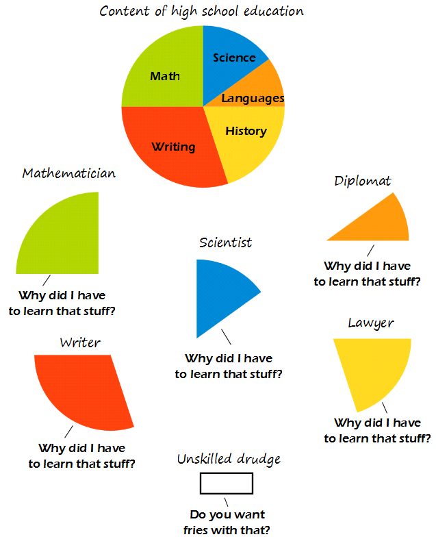

Comic JK 914
When I Feel Like It
⇤
<
?
>
⇥

⇤
<
?
>
⇥
Forum
.
RSS
.
Digg
.
Facebook
.
Reddit
.
Twitter
.
Stumbleupon
Enter your thoughts on number 914 here. Please no spamming, trolling, phreaking, or complaining about how you failed high school. >An empty comment box with the first line edited. That gives support to the hypothesis that it's the author. >>How do you figure? It's just as plausible that it's someone who edited the first line without adding anything else. >>>No one would do something like that! >>>> I assume you are an infallible all-knowing being. >>>>>Its Intelligent Design >>>I assumed the percentage of people who add a comment (especially if the box is empty) is higher than the percentage of people who edit the first line (note that they are not exclusive groups). The rest of the reasoning is trivial (aka homework). >I've seen the line in the unedited form before. It all starts early in the morning when I should be asleep, but am not... and behold! The first line appears at the dawn of a new comic! Then, with great stealth and wit, I myself have altered a few of the lines, though I be not the author. Wait - I don't get it. Mathematicians think they didn't need to learn math? That's just nonsensical, and if you meant to convey the reverse, something is drawn seriously backwards. >The idea is that after highschool all you retain is what you are actually interested in, so that slice represents you and you don't care about the rest of the pie subjects. >> Yes, but the choice of associated slices makes it appear the other way around. >>> Perhaps what each person should be saying is "Why did I have to learn that *other* stuff". >>> I, as a maths guy, see it like this: All the math I learnt in highschool is <PROFANITY> and doesn't help me to do real math. So why did I learn it, and WHY ON EARTH did they call it MATH? >>>>agreed, the cartoon appears to show people complaining about learning the basics of their own subject - so another vote for "other stuff"... however, why are lawyers associated with history ? >>>>>See State v. Arbuckle, 1865. >>>>>>but a list of decisions by date is not the same as "history"... one could also say programmers need to learn history, and point to a list of launch dates of programming languages that have influenced the current set... >>>> Well, lines pointing from text in this comic are generally used to indicate who's talking - makes sense in that context. >>>>><PROFANITY>. >>>>> I think history is the HS subject most closely related to law. Nobody bats an eye at a pre-law history major. I hated chemistry class. Memorization of arbitrary nomenclatures and valence numbers. >All nomenclature is arbitrary. <-Touche >>But there were at least three different arbitrary nomenclatures! I think that was just for inorganic chemistry. At least drawing organic compounds was sort of fun. > Chemistry class was a joke. I showed up once the first class and learned to universally balance equations and then only ever showed up to exams and every question seemed easy and the same. >>I like chemistry. A lot more moving parts to keep you guessing, compared to the same 3 equations over and over again in physics. >>> I'd like to see you use those same three equations when calculating the electric field of a penis shaped charge distribution. >>>> For $1000. But he can't watch, or it's extra. Diplomats definitely have to learn and use history... >I doubt it. Clearly, all they need is to have their wits about them and they can smooth talk their way through any situation. History schmistery. >>diplomats probably need to learn the history of catering though... ( as suggesting bacon sandwiches for lunch is not a good idea in certain locations... ) >>>Miss Piggy still finds that offensive. signed Kermit T. Frog <3 Ms.Basker > <3 Miss Piggy Why do I get the feeling today's xkcd was based on this? Or is there some imminent red-letter day in academia that I don't know about? > You mean this was inspired by xkcd 1050 right? >>+1, that was my first thought when I saw this comic. > It is roughly finals week at universities, and AP Exams in high schools, but that's not much to do with this.